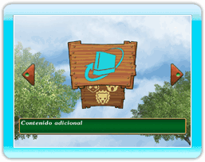

17 |
Contenido adicional |
 |
|

Puedes adquirir contenido adicional de My Zoo, como por ejemplo nuevos tipos de animales.
Usa los Wii Points (se venden por separado) para adquirir contenido adicional. Cómo adquirir el contenido adicional: Después de pulsar Una vez en la pantalla de contenido adicional, selecciona el nuevo tipo de animal que quieres adquirir. ●Jirafa Fecha de lanzamiento: 20-11-2009 Wii Points: 100 Bloques usados: 9 Este herbívoro vive en la sabana y es famoso por su larguísimo cuello. Es el animal más alto de la Tierra. Puede alcanzar una altura de más de 5 m.
●Rinoceronte
blanco
|
 |
 |
 |